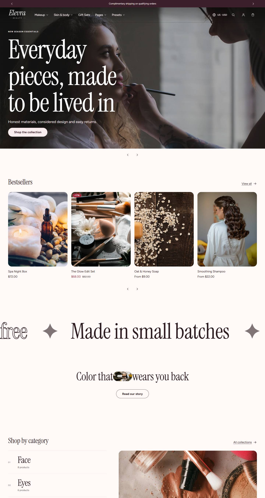
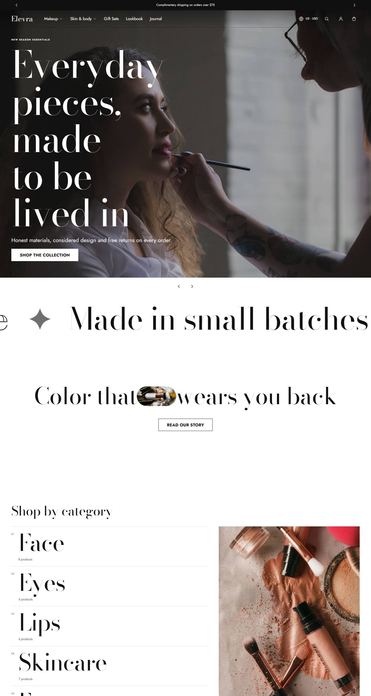
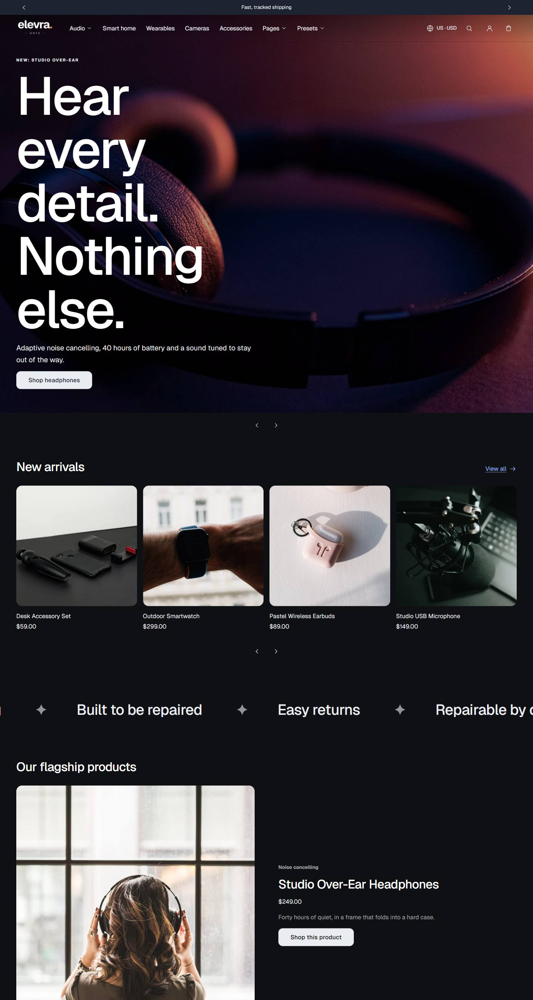
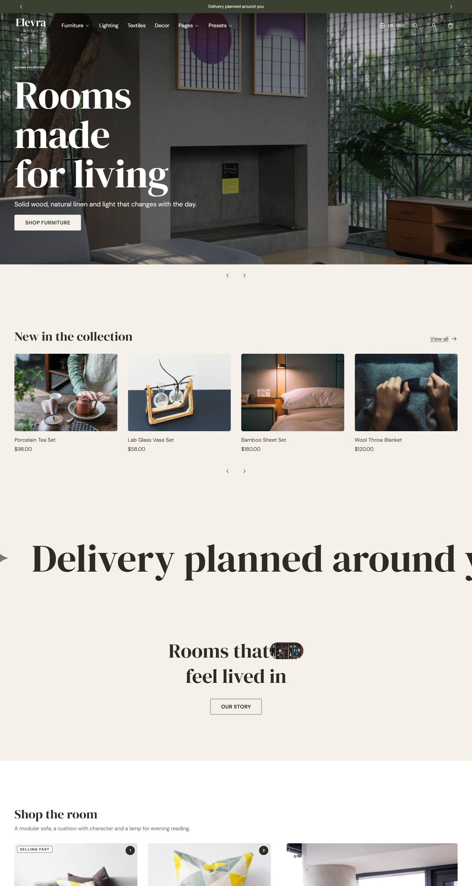
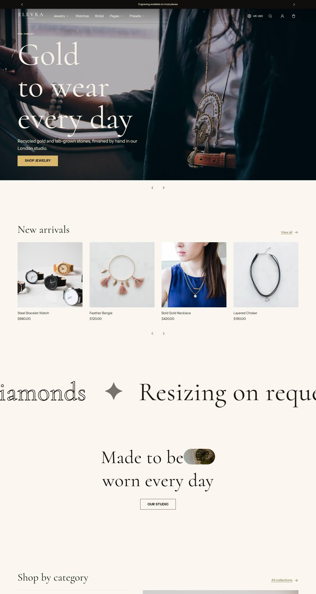

Theme styles
Elevra comes with five styles. A style is a starting point for the whole look: fonts, the six color schemes, corner shapes, button text, spacing, badge looks and scroll effects. Switching style never changes your products, pages, images or text.
To switch: Customize → Theme settings → Theme styles, pick a style, then Save. You can fine-tune any setting afterwards; your changes stay until you pick a style again.
| Style | Made for | Fonts | Look |
|---|---|---|---|
| Elevra (default) | Beauty, skincare, fragrance | Instrument Serif headings, Figtree text | Warm blush and cream colors, softly rounded corners, filled badges with percentage-off sale labels (called Rosé before version 0.16) |
| Couture | Fashion and accessories | Gilda Display headings, Jost text | Black and white with warm stone tones, square corners, uppercase buttons, outlined badges, sections that fade in as you scroll |
| Onyx | Electronics and gadgets | Geist headings and text | Dark background with an electric blue accent, gently rounded corners, filled badges |
| Maison | Home, furniture and decor | DM Serif Display headings, DM Sans text | Earthy sand, olive and terracotta, nearly square corners, uppercase buttons, generous spacing |
| Aurum | Jewelry and watches | Cormorant headings, Instrument Sans text | Ivory, black and soft gold, thin elegant headings, square corners, small uppercase buttons, outlined badges, the most spacious layout |





Each style's demo pages
When you install Elevra from the Theme Store with a style, that style's own home page, About page and (for Elevra, Couture and Maison) Lookbook page come with it. Each one is arranged for its industry:
- Elevra: outlined scrolling text, collection showcase, an editorial mosaic, scroll storytelling, values and a lookbook carousel.
- Couture: an editorial mosaic, a shoppable flatlay, a lookbook carousel of outfits and promotional cards.
- Onyx: a product spotlight, a comparison table that reads each product's specifications, and bestsellers by category.
- Maison: a room photo with product markers, scroll storytelling about how pieces are made, and a bedroom edit.
- Aurum: a layering edit, a "bench to box" story and the Aurum promise.
Switching style later in the editor changes the look only; your home page keeps its sections. The sections each page uses are listed in Sections, and the demo pages point at products and collections you can replace with your own.
Tips
- Product photos layout: open a product page in the editor, click Product information and choose a Gallery layout: Thumbnail style, Carousel, Grid mix, Grid: 1 column or Grid: 2 columns. On phones, photos are always a swipeable carousel.
- Colors: each style has six color schemes. Scheme 3 is always the dark one used over photos. If you change colors, keep text clearly readable against its background.
- Animation intensity (Theme settings → Animations): Off, Subtle or Expressive. It controls how much sections, images and headings move as they appear and when customers hover over products. Customers who turn on "reduce motion" on their device never see these effects, and you never wait for them in the theme editor.
- Display heading size (Theme settings → Typography): Small, Medium or Large, for the biggest headings such as the slideshow.
- Scroll effects: sections can fade in as customers scroll (Theme settings → Animations → Reveal sections on scroll). Customers who turn on "reduce motion" on their device never see these effects.
- Badges: Theme settings → Product cards controls how "New", "Sale", "Selling fast" and "Sold out" labels look. "Selling fast" only appears for products whose inventory Shopify tracks, at or below the number you choose, so it's always true.